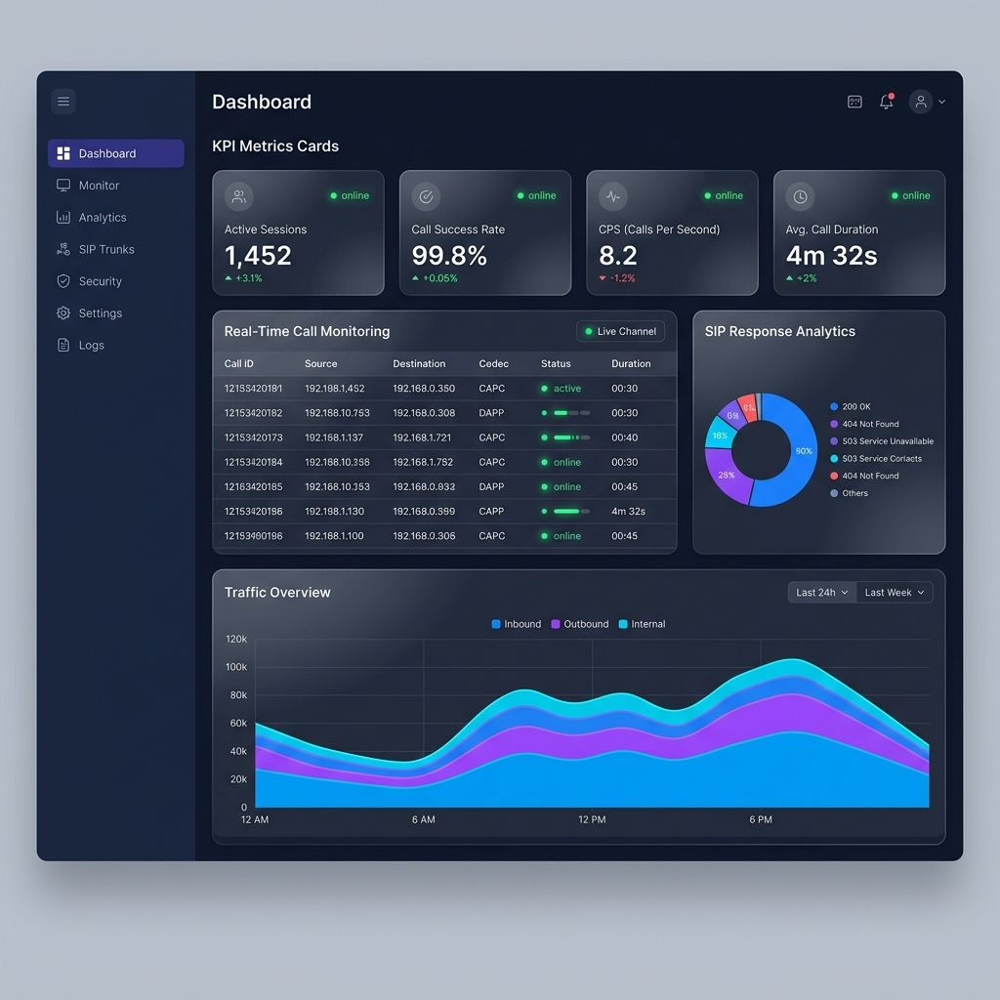
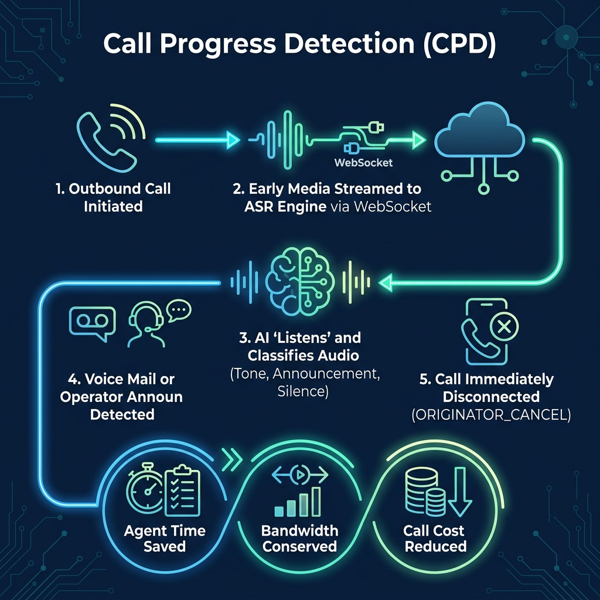
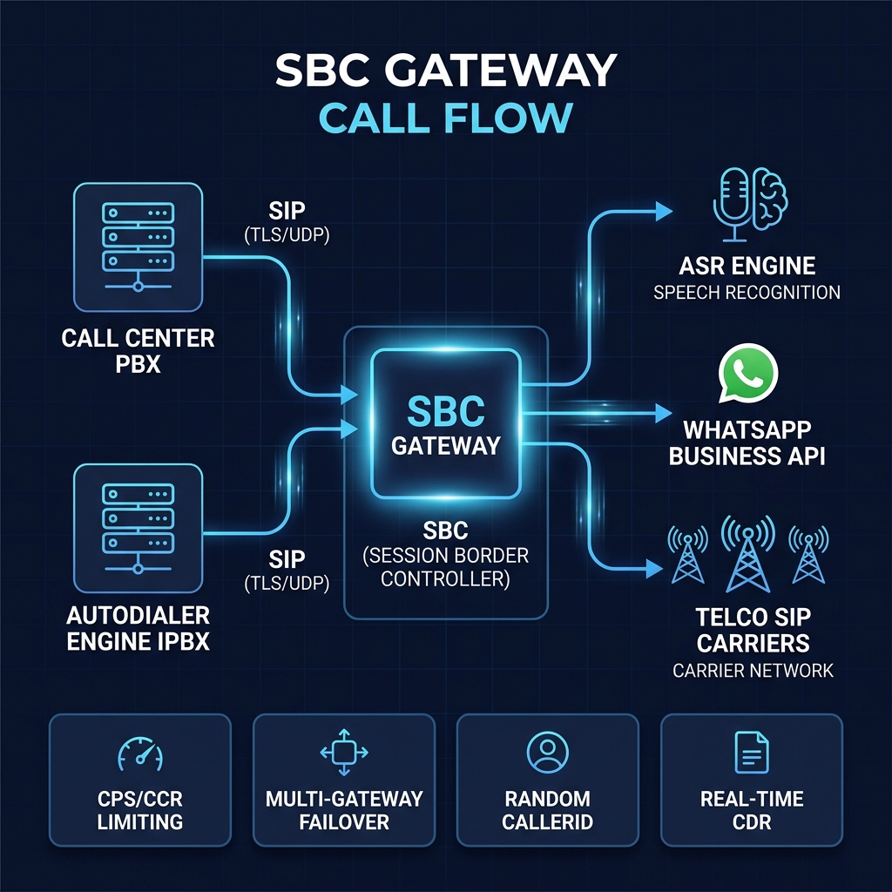
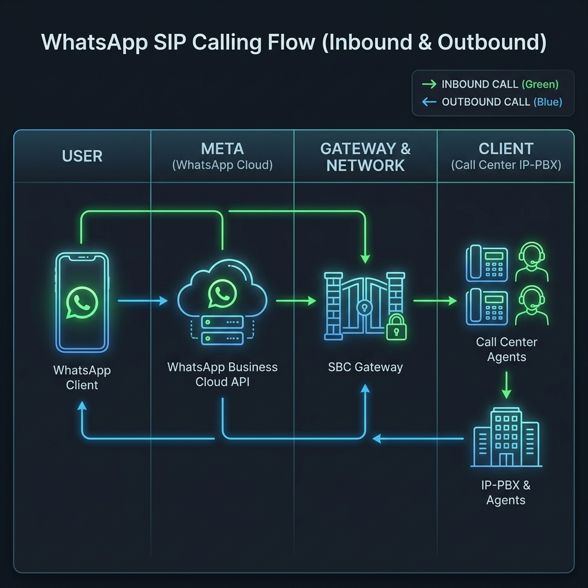
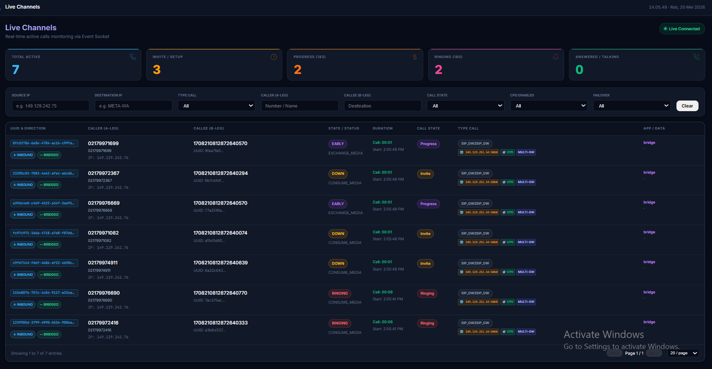
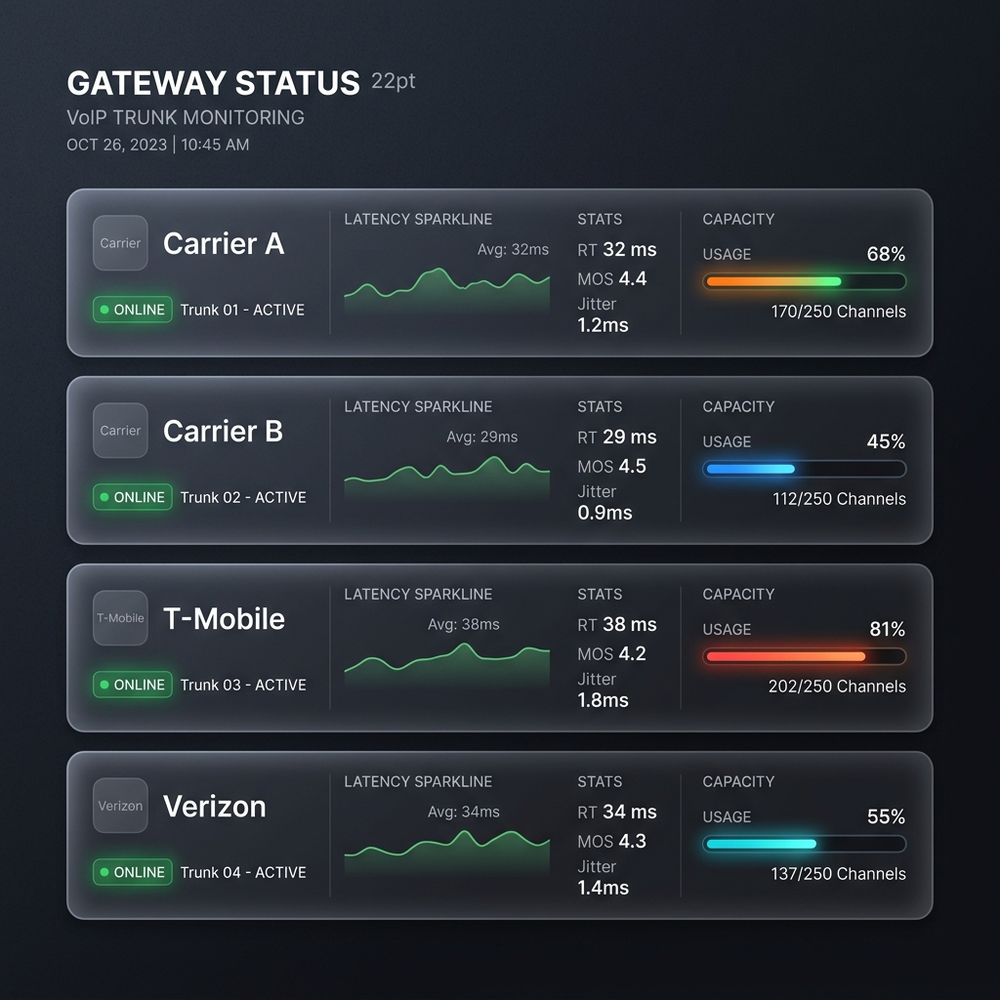
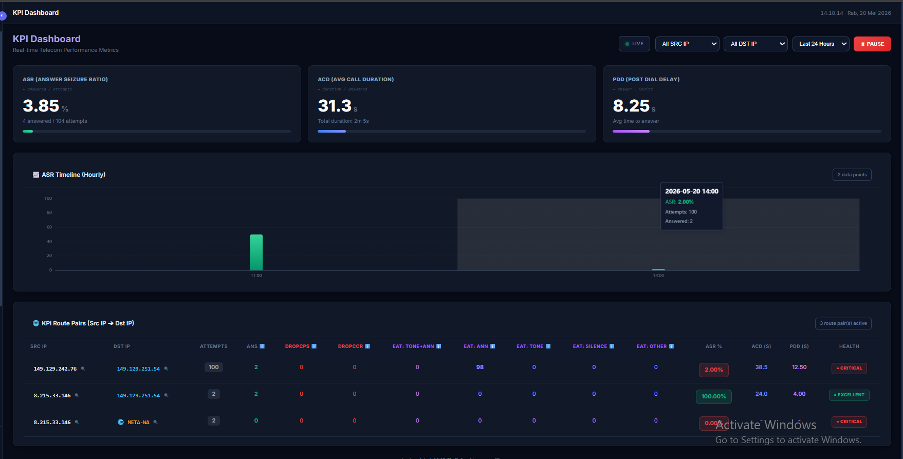
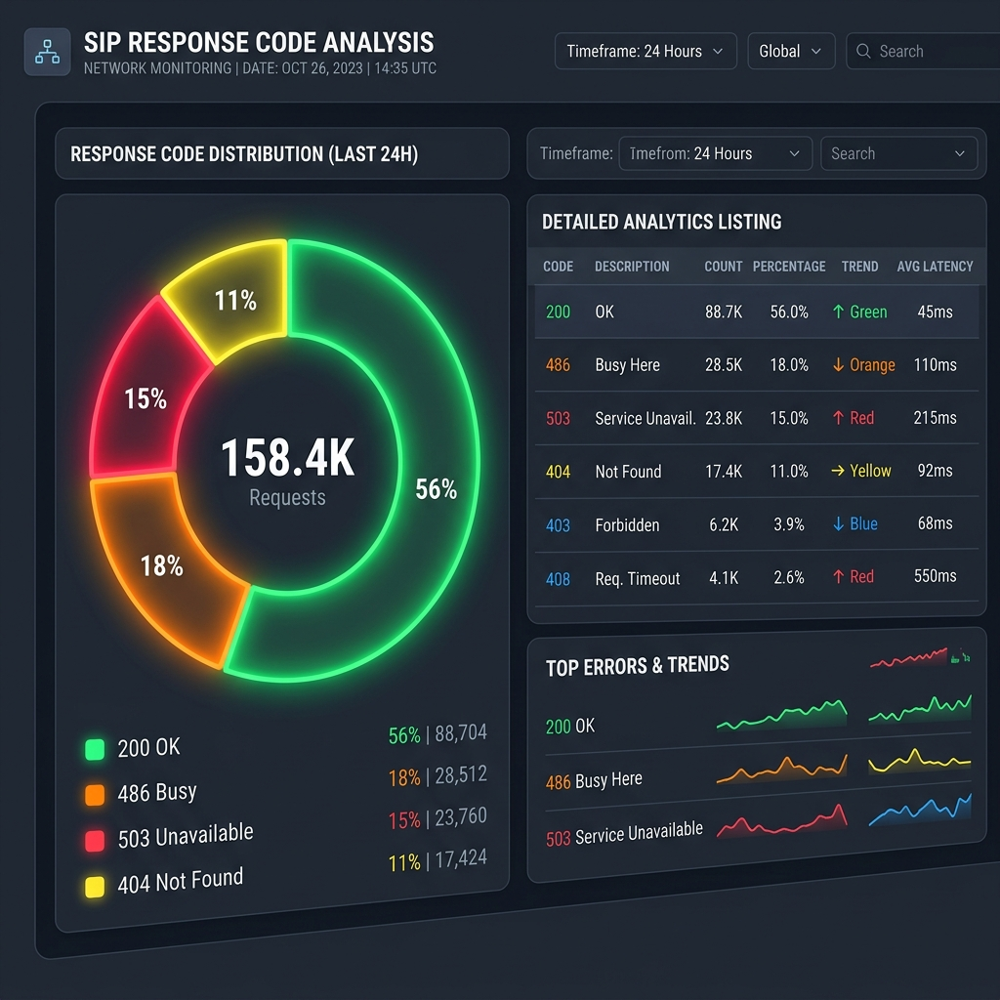
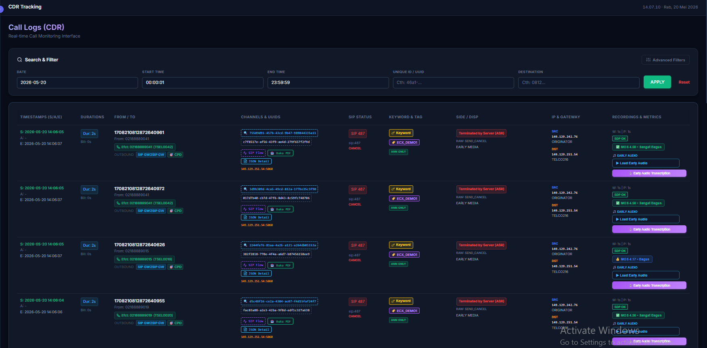
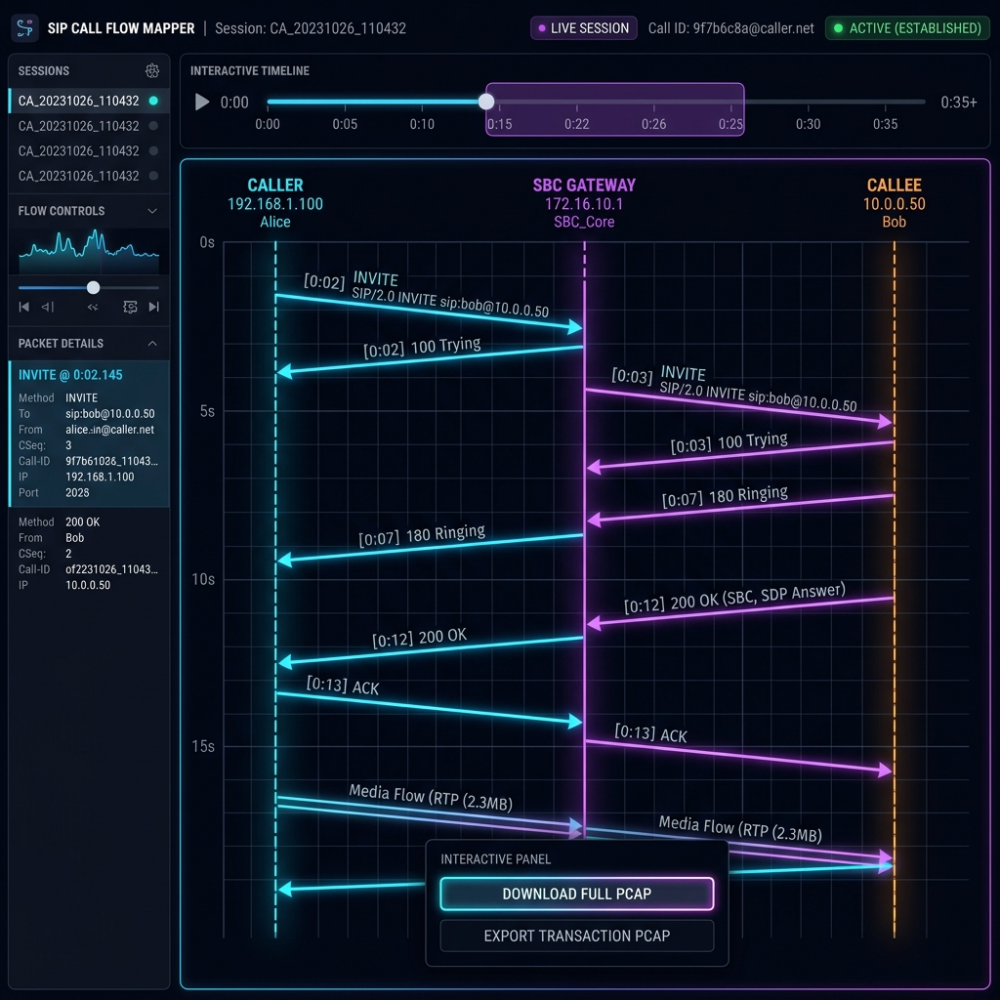

Platform Session Border Controller cerdas yang dirancang khusus untuk meminimalkan biaya VoIP lewat deteksi AI Call Progress Detection yang presisi serta interkoneksi langsung ke WhatsApp Business API.

Platform komunikasi terintegrasi yang dirancang untuk efisiensi maksimal dan manajemen lalu lintas VoIP kelas enterprise.
Analisis media stream cerdas menggunakan ASR Engine untuk mendeteksi suara operator atau voicemail secara real-time. Sistem otomatis memutus panggilan tak produktif sebelum terhubung ke agen.
Integrasi seamless dua arah (inbound & outbound) antara VoIP PBX/autodialer Anda dengan WhatsApp Business API, membuka kanal komunikasi digital yang lebih luas dan efisien.
Pelacakan dan visualisasi diagram alir paket (SIP ladder flow) serta fitur unduh file PCAP langsung dari antarmuka web, memudahkan tim NOC melakukan troubleshooting secara instan.
Klasifikasi dini tipe audio sebelum panggilan terjawab (tone_announcement, announcement_only, tone_only, silence) untuk pemutusan rute panggilan tidak aktif secara akurat.
Konfigurasi parameter routing, threshold deteksi, whitelist, firewall, hingga modul analitik 100% berbasis UI dashboard. Tidak memerlukan keahlian CLI atau modifikasi file server manual.
Proteksi failover multi-gateway otomatis yang dikombinasikan dengan pembatas laju panggilan (CPS & CCR limiting) untuk melindungi infrastruktur dari beban berlebih.
Call Progress Detection (CPD) bertindak bagaikan memiliki "telinga manusia" cerdas pada sistem panggilan otomatis Anda.
CPD menganalisis aliran early audio dan langsung mendeteksi notifikasi suara operator ("Nomor tidak aktif", "Kotak suara penuh") menggunakan ASR Engine. Panggilan langsung diputus (ORIGINATOR_CANCEL) layaknya manusia yang langsung menutup telepon, menghemat waktu tunggu agen.
Mencegah biaya percakapan voicemail karena panggilan ke nomor tidak aktif atau dialihkan ke kotak suara langsung diputus sebelum voicemail berbayar terhubung.
Bandwidth dan port trunk dibebaskan secara instan begitu notifikasi suara terdeteksi, mencegah pemborosan resource network pada audio warning yang tidak produktif.
Karena port trunk cepat dibebaskan dari panggilan tidak produktif, autodialer Anda dapat memproses dan mendial database nomor dengan volume yang jauh lebih besar dalam waktu yang sama.
Seluruh proses setup CPD, mapping Early Tone, threshold, dan failover dikonfigurasi secara visual melalui UI dashboard. Tidak perlu CLI atau konfigurasi manual di console server.


Arsitektur containerized dengan Docker host networking untuk performa maksimal tanpa overhead NAT.
Call center PBX atau SIP phone mengirim panggilan ke SBC Gateway melalui SIP trunk atau WebRTC.
SBC menganalisis prefix, menerapkan CPS/CCR limit, memilih gateway optimal, dan mengaktifkan Call Progress Detection secara otomatis.
Panggilan di-bridge ke telco carrier dengan failover otomatis. Jika gateway pertama gagal, langsung pindah ke gateway berikutnya.
Setiap panggilan dicatat ke TimescaleDB dengan 40+ field data termasuk RTP quality, keyword detection, dan early audio classification.
Hubungkan saluran komunikasi terpopuler dunia secara dua arah dengan infrastruktur Call Center IP-PBX Anda. Pelanggan dapat menelepon call center Anda secara gratis tanpa memotong pulsa sama sekali.
Pelanggan dapat memulai panggilan suara langsung dari profil WhatsApp Bisnis Anda. Panggilan disalurkan sepenuhnya melalui jaringan data internet (VoIP), menghilangkan hambatan biaya pulsa atau tarif telepon premium bagi pelanggan.
Agen call center dapat menerima panggilan masuk dan melakukan panggilan keluar (outbound) langsung dari IP-PBX atau softphone ke nomor WhatsApp pelanggan secara instan dengan transisi media yang lancar.
Setiap panggilan diamankan dengan enkripsi TLS/SRTP, pembatasan laju panggilan (CPS/CCR limiting), serta codec transcoding otomatis untuk memastikan kualitas suara terbaik dan proteksi dari serangan siber.
Mengurangi biaya sewa trunk line telepon tradisional (PSTN), meningkatkan volume jangkauan (outreach), serta menaikkan tingkat jawaban (answer rate) karena panggilan outbound teridentifikasi sebagai kontak bisnis resmi.

Tingkatkan efisiensi operasional call center dengan metrik terukur.
Rasio keberhasilan panggilan yang lebih tinggi dengan routing cerdas
CPD mendeteksi dan memutus panggilan ke mesin penjawab secara otomatis
Multi-gateway failover memastikan panggilan selalu terkirim
Data call statistics diperbarui setiap detik via WebSocket
Pantau, analisis, dan amankan infrastruktur VoIP Anda secara real-time dari satu antarmuka dashboard terpadu.

Pemantauan aktivitas panggilan yang sedang berjalan secara real-time melalui teknologi WebSocket berkecepatan tinggi.

Ketahui status kesehatan dan konektivitas setiap jalur trunk telco yang terhubung ke SBC Anda secara real-time.

Ringkasan performa telekomunikasi call center Anda yang divisualisasikan dalam bentuk grafik dan metrik operasional utama.

Laporan komprehensif mengenai sebaran kode respon SIP untuk menganalisis keberhasilan dan kegagalan panggilan dengan presisi.

Pencatatan dan pencarian seluruh riwayat panggilan VoIP secara mendalam dengan berbagai filter pencarian lanjutan.

Kemudahan pemecahan masalah panggilan secara visual tanpa perlu mengekstrak manual log server mentah yang rumit.
Modul Call Progress Detection (CPD) kami dirancang spesifik untuk memaksimalkan kapasitas dan throughput Autodialer Anda. Sementara untuk pusat layanan aduan dan pelanggan, kami menyediakan WhatsApp SIP Calling — mendukung panggilan masuk (inbound) gratis tanpa biaya pulsa/RTP serta panggilan keluar (outbound) dua arah yang efisien.
masteringvoip@gmail.com
+6281287264002
+6281287264002